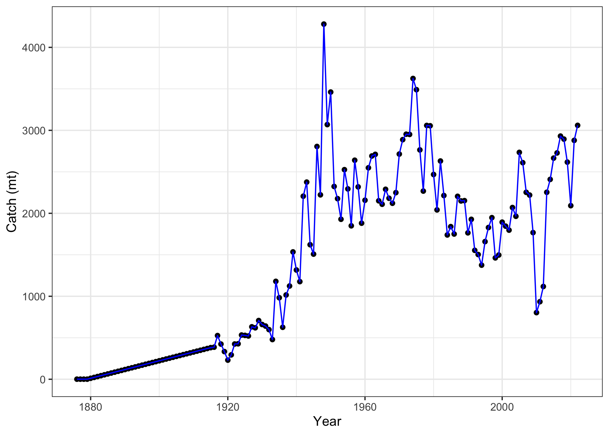
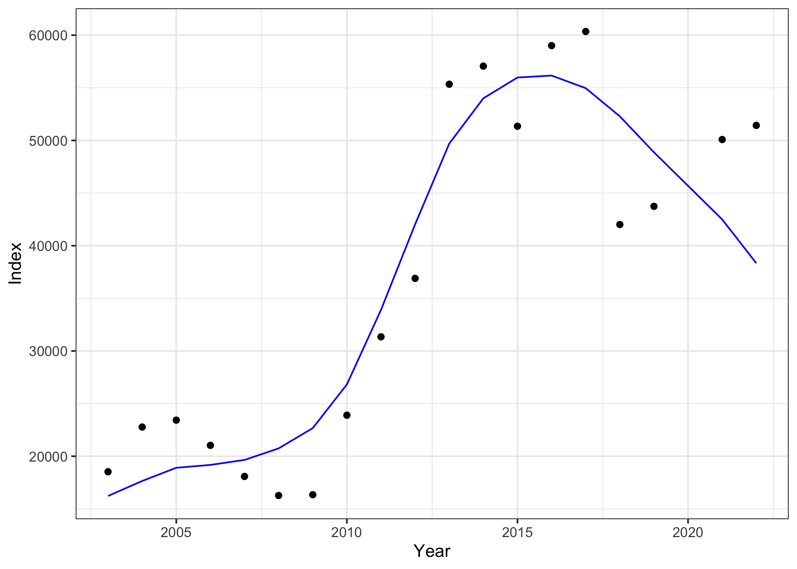
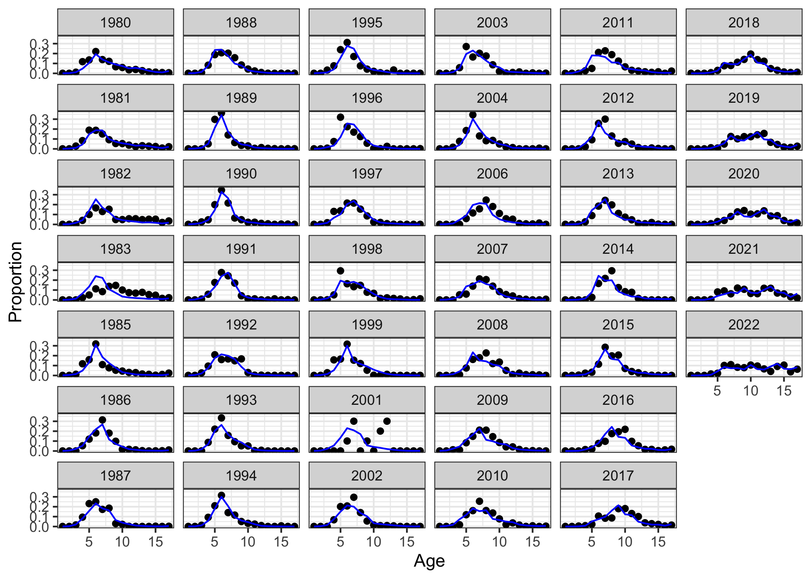
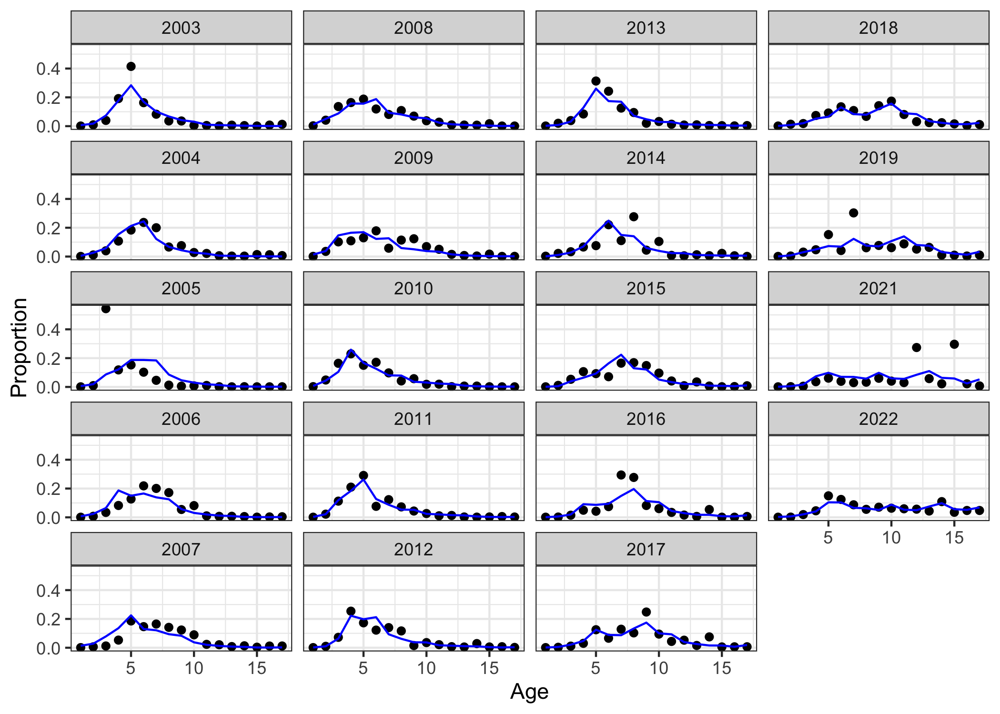
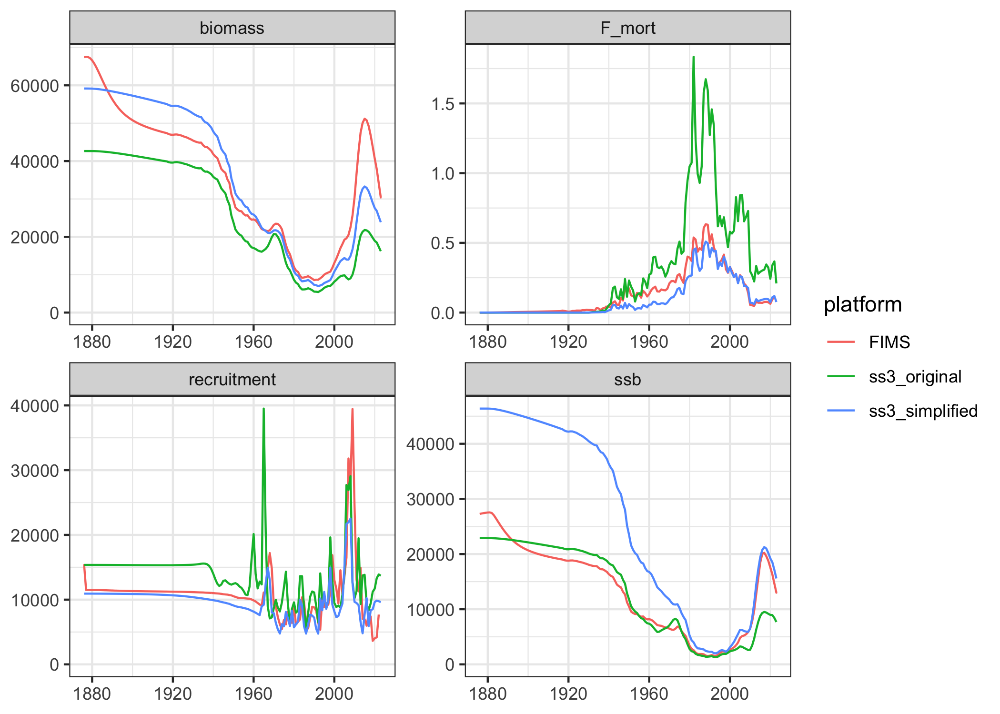

The operational petrale sole stock assessment used Stock Synthesis (SS3) and included numerous data types and population dynamic assumptions that are not yet available in FIMS. A simplified SS3 model was also developed to provide a closer comparison but is still a work in progress. This is intended as a demonstration and nothing more.
For both the FIMS model and the simplified SS3 model, I made the following changes:
Remove data
Remove lengths
Remove male ages
Remove discard fractions and discard comps
Simplify selectivity
Remove length-based retention functions
Convert to age-based logistic (from length-based double-normal, fixed asymptotic)
Remove parameter priors (on M and h)
Use female mean weight at age as calculated from the parametric growth curves
Varying Index CV to constant over time
Varying Catch ESS to constant over time
Script to prepare data for building FIMS object
Code
# read SS3 input files from petrale sole assessment on githubpetrale_input <- r4ss::SS_read("https://raw.githubusercontent.com/pfmc-assessments/petrale/main/models/2023.a034.001/")# # reading SS3 output doesn't work from github, so just using hard-wired values from model output# petrale_output <- r4ss::SS_output("https://raw.githubusercontent.com/pfmc-assessments/petrale/main/models/2023.a034.001/")# generic names for SS3 data and control files could be useful in future generalized version of this codess3dat <- petrale_input$datss3ctl <- petrale_input$ctl# define the dimensionsyears <-seq(ss3dat$styr, ss3dat$endyr)nyears <-length(years)nseasons <-1# ages <- 0:ss3dat$Nages # population ages in SS3, starts at age 0ages <-1:17# same as data binsnages <-length(ages)# source function to simplify data and convert from SS3 formatsource("R/get_ss3_data.R")# fleet 4 used conditional age-at-length data with marginal observations# entered as fleet == -4 (to exclude from likelihood due to redundancy)# using only marginals for FIMS and exclude CAAL data by filtering out# the fleet 4 age data# similarly, some early ages were excluded from fleet 1 in the original model# by assigning to fleet -1, these get filtered by get_ss3_data()# only include age comps with fleet = -4 or 1:ss3dat$agecomp <- ss3dat$agecomp |> dplyr::filter(FltSvy %in%c(-4, 1))ss3dat$agecomp$FltSvy <-abs(ss3dat$agecomp$FltSvy)# convert SS3 data into FIMS format using function defined in the R directorymydat <-get_ss3_data(ss3dat, fleets =c(1,4), ages = ages)# rename fleet4 as fleet2 (fleets 2 and 3 already removed above)mydat <- mydat |> dplyr::mutate(name = dplyr::case_when( name =="fleet1"~ name, name =="fleet4"~"fleet2"# change fleet4 to fleet2 ))
Setup FIMS model
Code
## set up FIMS data objectsclear()clear_logs()# I don't know what these commands are doingage_frame <- FIMS::FIMSFrame(mydat) fishery_catch <- FIMS::m_landings(age_frame) # filtering for the landings onlyfishery_agecomp <- FIMS::m_agecomp(age_frame, "fleet1") # filtering for ages from fleet 1survey_index <- FIMS::m_index(age_frame, "fleet2") # filtering for index data from fleet 2survey_agecomp <- FIMS::m_agecomp(age_frame, "fleet2") # filtering for ages from fleet 2fish_index <- methods::new(Index, nyears)fish_index$index_data <- fishery_catchfish_age_comp <- methods::new(AgeComp, nyears, nages)# Q: I'm confused about FIMSFrame being set up with age comps in proportions# vs here needing age comps in numbers# A: It's just not sorted out in FIMS yet, in the future this could be made simplerfish_age_comp$age_comp_data <- age_frame@data |> dplyr::filter(type =="age"& name =="fleet1") |> dplyr::mutate(n = value * uncertainty) |> dplyr::pull(n) |>round(1)# switches to turn on or off estimationestimate_fish_selex <-TRUEestimate_survey_selex <-TRUEestimate_q <-TRUEestimate_F <-TRUEestimate_recdevs <-TRUEestimate_init_naa <-FALSEestimate_log_rzero <-TRUE### set up fishery## methods::show(DoubleLogisticSelectivity)fish_selex <- methods::new(LogisticSelectivity)# SS3 model had length-based selectivity which leads to sex-specific# age-based selectivity due to sexually-dimorphic growth.# I didn't bother to calculate an age-based inflection point averaged over sexesfish_selex$inflection_point$value <-10fish_selex$inflection_point$is_random_effect <-FALSEfish_selex$inflection_point$estimated <- estimate_fish_selexfish_selex$slope$value <-2fish_selex$slope$is_random_effect <-FALSEfish_selex$slope$estimated <- estimate_fish_selex## create fleet object for fishing fleetfish_fleet <- methods::new(Fleet)fish_fleet$nages <- nagesfish_fleet$nyears <- nyearsfish_fleet$log_Fmort <-log(rep(0.00001, nyears))fish_fleet$estimate_F <- estimate_Ffish_fleet$random_F <-FALSEfish_fleet$log_q <-0fish_fleet$estimate_q <- estimate_qfish_fleet$random_q <-FALSEfish_fleet$log_obs_error <-rep(log(sqrt(log(0.01^2+1))), nyears)# Set Index, AgeComp, and Selectivity using the IDs from the modules defined abovefish_fleet$SetAgeCompLikelihood(1)fish_fleet$SetIndexLikelihood(1)fish_fleet$SetObservedIndexData(fish_index$get_id())fish_fleet$SetObservedAgeCompData(fish_age_comp$get_id())fish_fleet$SetSelectivity(fish_selex$get_id())## Setup surveysurvey_fleet_index <- methods::new(Index, nyears)survey_age_comp <- methods::new(AgeComp, nyears, nages)survey_fleet_index$index_data <- survey_indexsurvey_age_comp$age_comp_data <- mydat |> dplyr::filter(type =="age"& name =="fleet2") |> dplyr::mutate(n = value * uncertainty) |> dplyr::pull(n)## survey selectivity: ascending logistic## methods::show(DoubleLogisticSelectivity)survey_selex <-new(LogisticSelectivity)survey_selex$inflection_point$value <-6survey_selex$inflection_point$is_random_effect <-FALSEsurvey_selex$inflection_point$estimated <- estimate_survey_selexsurvey_selex$slope$value <-2survey_selex$slope$is_random_effect <-FALSEsurvey_selex$slope$estimated <- estimate_survey_selex## create fleet object for surveysurvey_fleet <- methods::new(Fleet)survey_fleet$is_survey <-TRUEsurvey_fleet$nages <- nagessurvey_fleet$nyears <- nyearssurvey_fleet$estimate_F <-FALSEsurvey_fleet$random_F <-FALSEsurvey_fleet$log_q <-1.4# petrale sole catchability estimated ~4.0 = exp(1.4)survey_fleet$estimate_q <- estimate_qsurvey_fleet$random_q <-FALSE# Q: why can't the index uncertainty come from FIMSFrame?survey_fleet$log_obs_error <- age_frame@data |> dplyr::filter(type =="index"& name =="fleet2") |> dplyr::pull(uncertainty) |>log()survey_fleet$SetAgeCompLikelihood(1)survey_fleet$SetIndexLikelihood(1)survey_fleet$SetSelectivity(survey_selex$get_id())survey_fleet$SetObservedIndexData(survey_fleet_index$get_id())survey_fleet$SetObservedAgeCompData(survey_age_comp$get_id())# Population module# recruitmentrecruitment <- methods::new(BevertonHoltRecruitment)# methods::show(BevertonHoltRecruitment)# petrale sigmaR is 0.5recruitment$log_sigma_recruit$value <-log(ss3ctl$SR_parms["SR_sigmaR", "INIT"])# petrale log(R0) is around 9.6 (where R0 is in thousands)recruitment$log_rzero$value <- ss3ctl$SR_parms["SR_LN(R0)", "INIT"]# Q: do we need to account for SS3 R0 in thousands?# A: formula below is thanks to Bai Li# in https://github.com/NOAA-FIMS/case-studies/commit/d7c0d645a18766d030f632e5818d91764e2297ef# but did not produce good results (perhaps due to some other issue) # recruitment$log_rzero$value <- log(exp(ss3ctl$SR_parms["SR_LN(R0)", "INIT"])*1000)recruitment$log_rzero$is_random_effect <-FALSErecruitment$log_rzero$estimated <- estimate_log_rzero# petrale steepness is fixed at 0.8steep <- ss3ctl$SR_parms["SR_BH_steep", "INIT"]recruitment$logit_steep$value <--log(1.0- steep) +log(steep -0.2)recruitment$logit_steep$is_random_effect <-FALSErecruitment$logit_steep$estimated <-FALSErecruitment$estimate_log_devs <- estimate_recdevs# Q: why are parameters "log_devs" when output is "report$log_recruit_dev"?# and are they multipliers, not deviations from zero?# needed to change from 1 to 0 to get stable populationrecruitment$log_devs <-rep(0, nyears) # set to no deviations (multiplier) to start# growthewaa_growth <- methods::new(EWAAgrowth)ewaa_growth$ages <- ages# NOTE: getting weight-at-age vector from# petrale_output$wtatage |># dplyr::filter(Sex == 1 & Fleet == -1 & Yr == 1876) |># dplyr::select(paste(0:40)) |># round(4)ewaa_growth$weights <-c(# 0.0010, # age 00.0148, 0.0617, 0.1449, 0.2570, 0.3876, 0.5260, 0.6640, 0.7957, 0.9175,1.0273, 1.1247, 1.2097, 1.2831, 1.3460, 1.3994, 1.4446, 1.4821)# maturitymaturity <-new(LogisticMaturity)# approximate age-based equivalent to length-based maturity in petrale model# based on looking at model$endgrowth |> dplyr::filter(Sex == 1) |> dplyr::select(Age_Beg, Len_Mat)maturity$inflection_point$value <-6.5maturity$inflection_point$is_random_effect <-FALSEmaturity$inflection_point$estimated <-FALSEmaturity$slope$value <-2# arbitrary guessmaturity$slope$is_random_effect <-FALSEmaturity$slope$estimated <-FALSE# populationpopulation <-new(Population)# petrale natural mortality is estimated around 0.14M_value <- ss3ctl$MG_parms["NatM_p_1_Fem_GP_1", "INIT"]population$log_M <-rep(log(M_value), nages * nyears)population$estimate_M <-FALSE# initial numbers at age based on R0 + mortalityinit_naa <-exp(recruitment$log_rzero$value) *exp(-(ages -1) * M_value)init_naa[nages] <- init_naa[nages] / M_value # sum of infinite seriespopulation$log_init_naa <-log(init_naa)population$estimate_init_naa <- estimate_init_naapopulation$nages <- nagespopulation$ages <- agespopulation$nfleets <-2# fleets plus surveyspopulation$nseasons <- nseasonspopulation$nyears <- nyears# population$proportion_female <- rep(0.5, nages)population$SetMaturity(maturity$get_id())population$SetGrowth(ewaa_growth$get_id())population$SetRecruitment(recruitment$get_id())
report <- obj$report(obj$env$last.par.best)# copy input data to use as basis for resultsresults_frame <- age_frame@dataresults_frame$expected <-NA# convert date string to numeric yearresults_frame <- results_frame |> dplyr::mutate(year = lubridate::as_date(datestart) |> lubridate::year())# add expected index to data frameresults_frame$expected[results_frame$type =="index"& results_frame$name =="fleet2"] <- report$exp_index[[2]]# add estimated catch to data frameresults_frame$expected[results_frame$type =="landings"& results_frame$name =="fleet1"] <- report$exp_catch[[1]]# add estimated age comps to data framefor (fleet in1:2) {# copy Cole's approach to rescaling expected comps to proportions x1 <-matrix(report$cnaa[[fleet]], ncol = nages, byrow =TRUE) x1 <- x1 /rowSums(x1)dimnames(x1) <-list(year = years, age = ages) x1 <- reshape2::melt(x1, value.name ="paa") |> dplyr::mutate(type ="age", name =paste0("fleet", fleet))# add expected proportions into results_frame results_frame <-# add paa for age comps (will be NA for all other types) dplyr::left_join(x = results_frame, y = x1) |># replace value column with paa for age data within this fleet (when not NA) dplyr::mutate(expected = dplyr::case_when(is.na(paa) ~ expected, TRUE~ paa)) |> dplyr::select(-paa) # remove temporary paa column}# plot catch fitresults_frame |> dplyr::filter(type =="landings"& value !=-999) |>ggplot(aes(x = year, y = value)) +geom_point() +xlab("Year") +ylab("Catch (mt)") +geom_line(aes(x = year, y = expected), color ="blue") +theme_bw()
Code
ggsave("figures/NWFSC-petrale_fit_catch.png")# plot index fitresults_frame |> dplyr::filter(type =="index"& value !=-999) |>ggplot(aes(x = year, y = value)) +geom_point() +xlab("Year") +ylab("Index") +geom_line(aes(x = year, y = expected), color ="blue") +theme_bw()
Code
ggsave("figures/NWFSC-petrale_fit_index.png")# plot age comp fits# age comps for fleet 1results_frame |> dplyr::filter(type =="age"& name =="fleet1"& value !=-999) |>ggplot(aes(x = age, y = value)) +# note: dir = "v" sets vertical direction to fill the facets which# makes comparison of progression of cohorts easier to seefacet_wrap(vars(year), dir ="v") +geom_point() +xlab("Age") +ylab("Proportion") +geom_line(aes(x = age, y = expected), color ="blue") +theme_bw()
Code
ggsave("figures/NWFSC-petrale_fit_comps_fleet1.png")# age comps for fleet 2results_frame |> dplyr::filter(type =="age"& name =="fleet2"& value !=-999) |>ggplot(aes(x = age, y = value)) +# note: dir = "v" sets vertical direction to fill the facets which# makes comparison of progression of cohorts easier to seefacet_wrap(vars(year), dir ="v") +geom_point() +xlab("Age") +ylab("Proportion") +geom_line(aes(x = age, y = expected), color ="blue") +theme_bw()
Code
ggsave("figures/NWFSC-petrale_fit_comps_fleet2.png")# assemble time series outputtimeseries <-rbind(data.frame(year =c(years, max(years) +1),type ="ssb",value = report$ssb[[1]] ),data.frame(year =c(years, max(years) +1),type ="biomass",value = report$biomass[[1]] ),data.frame(year =c(years),type ="recruitment",value = report$recruitment[[1]][1:nyears] # final value was 0 ),data.frame(year =c(years),type ="F_mort",value = report$F_mort[[1]] ))# plot time series of 4 quantitiestimeseries |>ggplot(aes(x = year, y = value)) +facet_wrap(vars(type), scales ="free") +geom_line() +expand_limits(y =0) +theme_bw()
Code
ggsave("figures/NWFSC-petrale_time_series.png")
Compare results to SS3 models (still a work in progress)
Code
# load saved time seriestimeseries_compare <-readRDS("data_files/NWFSC-petrale-SS3-timeseries.rds")# add FIMS output to time series tabletimeseries_compare <- timeseries |> dplyr::mutate(platform ="FIMS") |>rbind(timeseries_compare)# make plot comparing time seriestimeseries_compare |>ggplot(aes(year, value, color = platform)) +geom_line() +facet_wrap("type", scales ="free") +ylim(0, NA) +labs(x =NULL, y =NULL) +theme_bw()
Code
ggsave("figures/NWFSC-petrale_timeseries_comparison.png")# numbers at age as a matrixnaa <-matrix(report$naa[[1]], ncol = nages, byrow =TRUE)# numbers at age as a long data framenaa_df <- tidyr::expand_grid(year =c(years, max(years) +1), age = ages) |>data.frame(naa = report$naa[[1]])# bubble plot of numbers at agenaa_df |>ggplot(aes(x = year, y = age, size = naa)) +geom_point(alpha =0.2) +theme_bw()
Code
ggsave("figures/NWFSC-petrale_numbers_at_age.png")clear()# end "if (FALSE)" block to only run if model is working
Plots
Catch fit
 ### Index fit  ### Age comp fits   ### Time series comparisons with SS3 model 